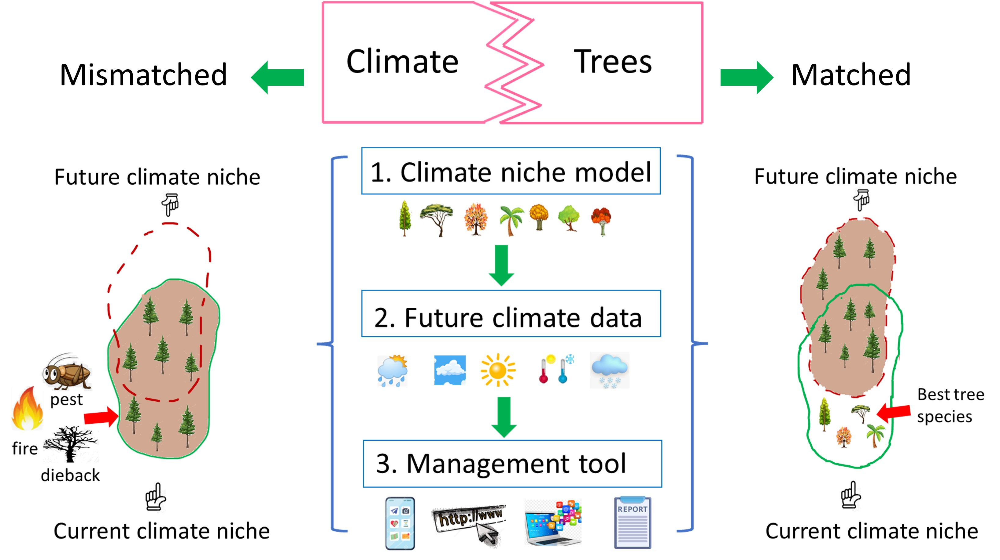

Welcome! My name is Wenhuan Xu, I am a PhD student in the University of British Columbia (UBC), Vancouver, Canada.
My current project
Climate change results in maladaptation of tree species and their habitat loss, jeopardizing species biodiversity and forest ecological functions.
Tree species and climates have adapted to each other over a long history. However, due to climate change, some tree species now are suffering maladaptation,
which results in forest fire, dieback and pet. The primary reason for this is the mismatch of tree species and climate niche.
My research aims to address this mismatch, and mitigate the effect of climate change, so that I can improve tree species adaptation and forest productivity.
The way I do it is, first of all, I will use machine learning to build climate niche model for each species. Then, I will use our lab's own-designed software to obtain high-resolution future climate data, by doing this I can delineate the future suitable habitat for tree species.
My research is novel in the following ways: 1. My research will cover more tree species; In the past, many tree species could not be built niche models due to the lack of data, but I will use up-to-date high-resolution data from digital vegetation maps, allowing me to cover more tree species. 2. I intend to devise novel approaches for combining climate and other environmental factors. By doing so I can create more comprehensive and practical niche models. 3. I am going to develop user-friendly software that foresters and government agencies can use to select the best tree species for a specific planting site.
In short, my research is attempting to assist tree species in finding suitable future habitats.

Feel free to look at my
research page to learn more!
NOTE: This is my personal website.